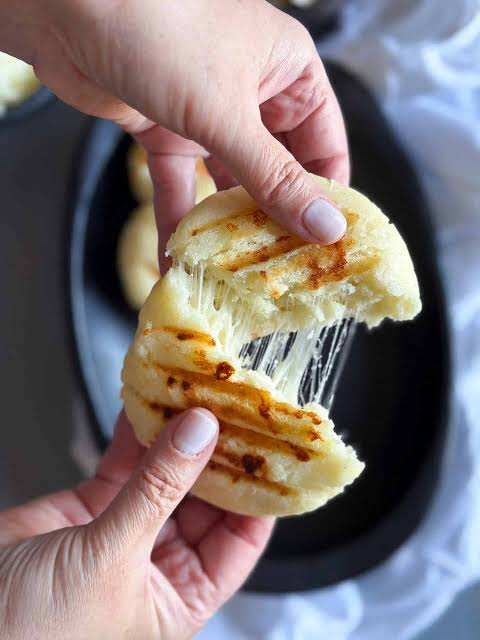

Receta de Arepas Colombianas

Ingredientes
- 2 tazas de harina para arepas.
- 2 tazas de agua tibia.
- 1 cucharadita de sal.
- 1 cucharada de mantequilla.
- Queso rallado al gusto (opcional).
Proceso de preparación
- Colocar el agua tibia en un recipiente y agregar la harina.
- Añadir poco a poco la mantequilla.
- Agregar la cucharadita de sal y amasar hasta obtener una masa suave.
- Dividir la masa en porciones agregando el queso y formar arepas redondas.
- Calentar una sartén y cocinar las arepas por ambos lados.
- Retirar cuando estén doradas y servir calientes.